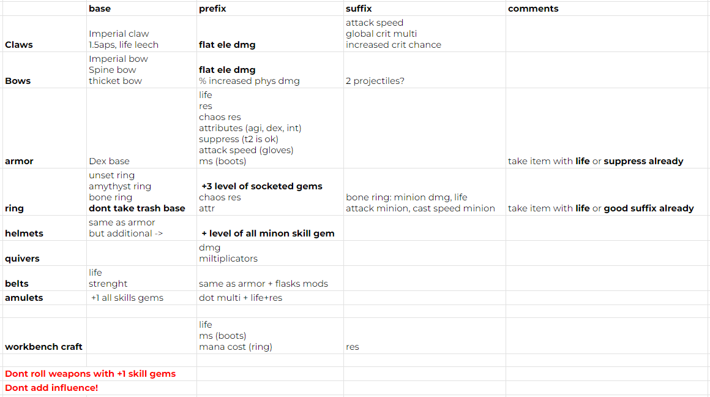

ATLAS TREES
Стремимся как можно больше фармить рунических мобов, всячески их бафая
Как взрывать на картах
- смотрим все моды коробок
- Наиболее важные:
- Runic monsters are duplicaterd (RARE freq)
- 50% increased QUANTITY of expedition logbooks dropped by runic monsters
- 40% increased Quantity of items dropped by monsters
- как можно больше рунических мобов (черепки на палке)
- добираем сундуки
Логбуки
Типы локаций
Good:
- Forest ruins
- Dried Riverbed
- Vaal Temple
- Shipwreck Reef
